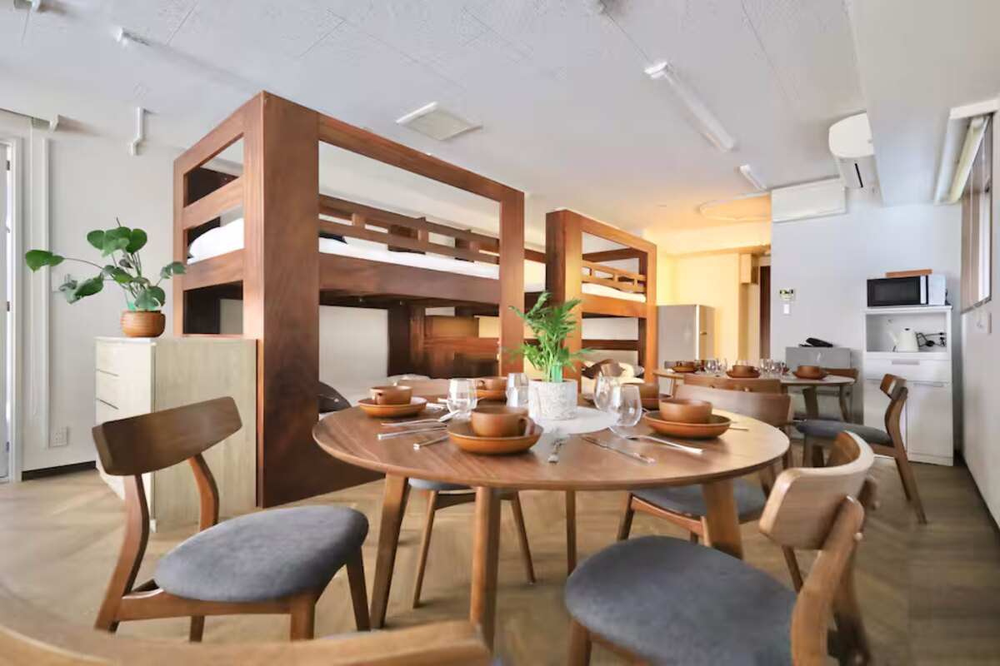
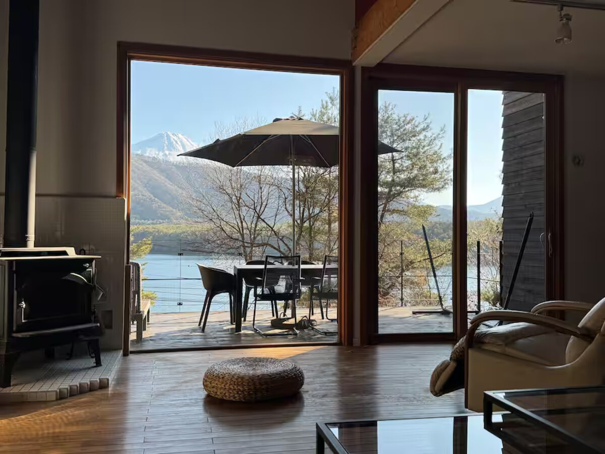
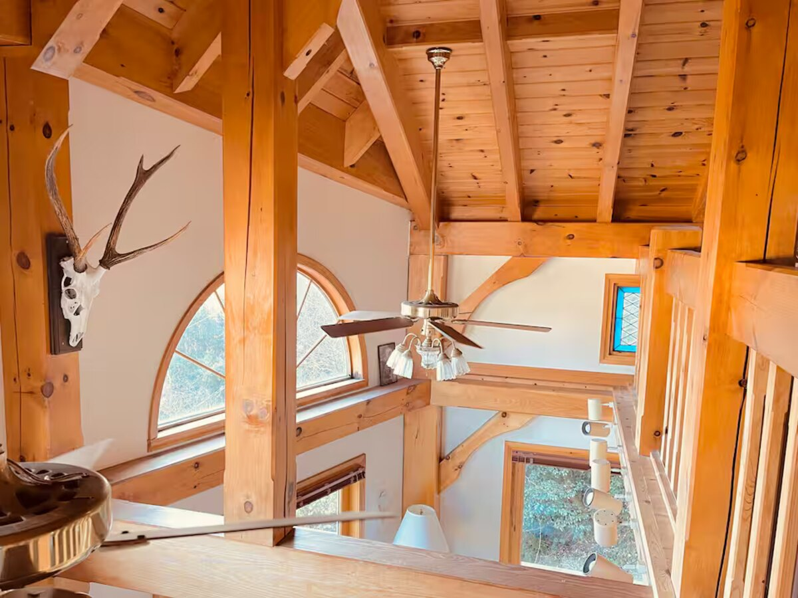
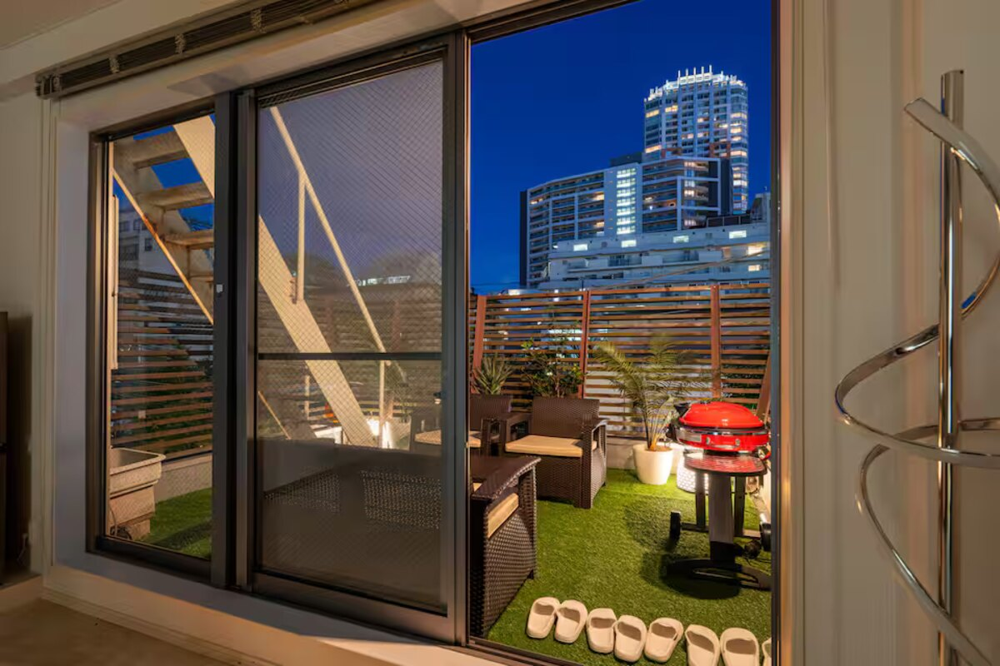
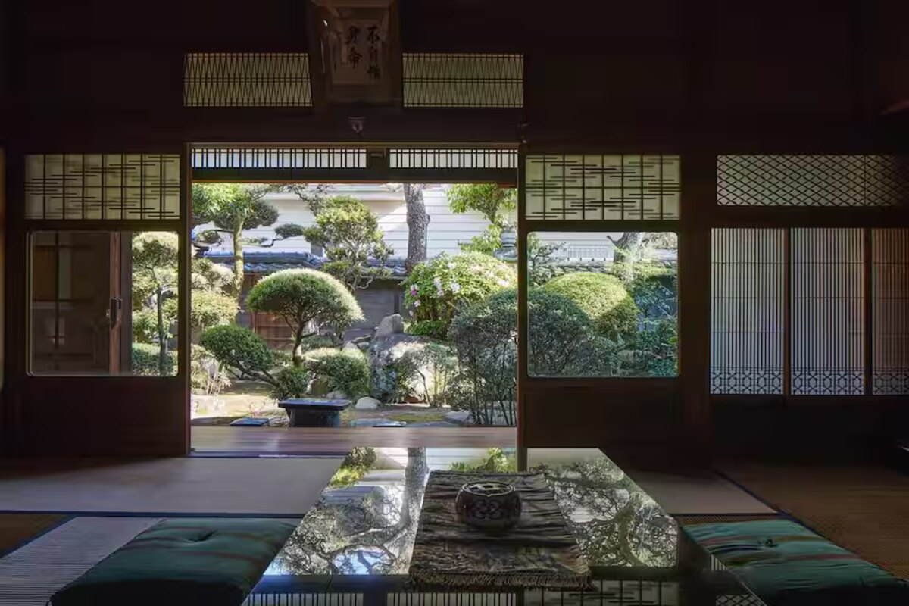
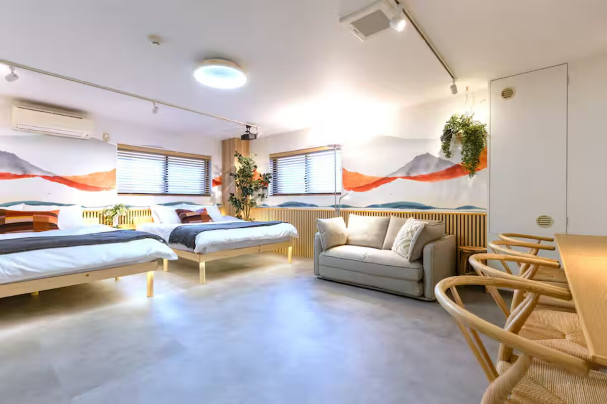

ニッポン・エスケープ JAPAN ’26
日本 2026 JAPAN ODYSSEE
Vier Wochen, sechs Mann, ein Van. Von Tokyos Neon über den Fuji und die Izu-Küste bis zum Streetfood-Krieg in Osaka — und zurück ins Obon-Finale.
Die Crew仲間
Mats
Sebastian
Marko
Emre
Hendrik
Cristobal
Die Route旅程
Nostalgie & Ankunft
Veteranen-Start, Einleben in Tokyo. Cristobal stößt am 28.07. dazu.
Roadtrip im Van 🚐
4 Nächte volle Freiheit: Fuji-Vibes, Onsen, Eishöhlen und der Sprung in den Pazifik.
Shibuya Peak
Full Crew, volle Power. Letzte Tage mit Hendrik vor seiner Abreise.
Kansai-Expedition 🚅
Shinkansen runter. Tempel-Kultur in Kyoto, Streetfood-Eskalation in Dotonbori.
Obon-Finale & Ausklang 🎆
Sommerfest-Stimmung. Zurück VOR der großen Obon-Reisewelle. Letzte Ramen, dann Sayonara.
Das Grand Finaleロードトリップ
Tokyo → Fuji
Van-Pickup, Chureito Pagode, Onsen am See.
Water & Ice
Lake Motosuko baden, Eishöhlen, BBQ mit Fuji-View.
Izu Skyline
Bergstraße nach Shimoda, Sprung in den Pazifik.
Beach Life
Shirahama Beach, Ryugu Sea Cave, Seafood-Dinner.
→ Tokyo
Küstenfahrt über Atami, Van-Abgabe, Reunion.
Budget予算
Unterkünfte宿
Alle 6 ✅ gebucht
Tokyo · Sumida

Fujikawaguchiko

Shimoda

Tokyo · Shibuya

Osaka · Izumisano
